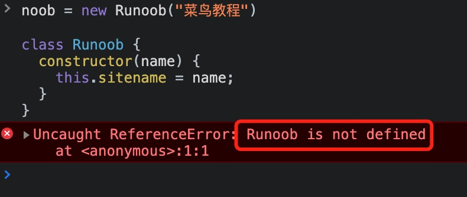
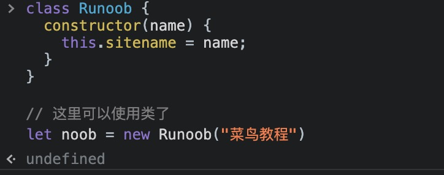

JavaScript クラス継承
JavaScript クラス継承は extends キーワードを使用します。
継承により、別のクラスに基づいてクラスを定義できるため、アプリケーションの作成と保守が容易になります。
super()メソッドは親クラスのコンストラクターを呼び出すために使用されます。
クラスを作成するとき、新しいデータメンバーとメンバー関数を再作成する必要はなく、新しいクラスが既存のクラスのメンバーを継承することを指定するだけで済みます。この既存のクラスを基底クラス（親クラス）、新しいクラスは派生クラス（子クラス）。
継承はis aの関係を表します。例えば、哺乳類は動物であり、犬は哺乳類です。したがって、犬は動物です、など。

コードは次のとおりです：
class Animal {
};
class Dog extends Animal {
};
次の例で作成されたクラス "Runoob" は "Site" クラスを継承しています:
例
class Site {
constructor(name) {
this.sitename = name;
}
present() {
return '私は好きです' + this.sitename;
}
}
class Runoob extends Site {
constructor(name, age) {
super(name);
this.age = age;
}
show() {
return this.present() + '、それは創設しました' + this.age + '年。';
}
}
let noob = new Runoob("菜鸟教程", 5);
document.getElementById("demo").innerHTML = noob.show();
super()メソッドは親クラスのコンストラクターを参照します。
コンストラクター内で呼び出すことにより、super()メソッドを呼び出すことで、親クラスのコンストラクターを呼び出し、親クラスのプロパティとメソッドにアクセスできます。
継承はコードの再利用性に役立ちます。
JavaScript には他のプログラミング言語のような従来のクラスはなく、プロトタイプベースの継承モデルです。
ES6 ではクラスとclassキーワードが導入されましたが、基盤となるメカニズムは依然としてプロトタイプ継承に基づいています。
プロトタイプチェーンを使用した継承
次の例では、Animal は基底クラス、Dog は Animal を継承するサブクラスです。Dog.prototype は Object.create(Animal.prototype) を使用して新しいオブジェクトを作成し、Animal.prototype のメソッドとプロパティを継承します。Dog.prototype.constructor を Dog に設定することで、継承チェーン上のコンストラクターが正しいことを保証します。
例
function Animal(name) {
this.name = name;
}
Animal.prototype.eat = function() {
console.log(this.name + " is eating.");
};
function Dog(name, breed) {
Animal.call(this, name);
this.breed = breed;
}
Dog.prototype = Object.create(Animal.prototype);
Dog.prototype.constructor = Dog;
Dog.prototype.bark = function() {
console.log(this.name + " is barking.");
};
var dog = new Dog("Buddy", "Labrador");
dog.eat();
dog.bark();
ES6 クラス継承を使用
ES6 では class キーワードが導入され、クラスと継承の定義がより明確になりました。extends キーワードは継承関係を確立するために使用され、super キーワードは子クラスのコンストラクター内で親クラスのコンストラクターを呼び出すために使用されます。
例
class Animal {
constructor(name) {
this.name = name;
}
eat() {
console.log(this.name + " is eating.");
}
}
class Dog extends Animal {
constructor(name, breed) {
super(name);
this.breed = breed;
}
bark() {
console.log(this.name + " is barking.");
}
}
const dog = new Dog("Buddy", "Labrador");
dog.eat();
dog.bark();
プロトタイプチェーン継承と ES6 クラス継承のどちらを使用しても、同様の継承効果を実現できます。どの方法を選択するかは、個人の好みやプロジェクトの要件に応じて決定できます。
getter と setter
クラスでは、getter と setter を使用して値を取得および設定できます。getter と setter はどちらも厳密モードで実行する必要があります。
getter と setter により、プロパティの操作が非常に柔軟になります。
クラスに getter と setter を追加するには、get キーワードと set キーワードを使用します。
次の例では、sitename プロパティに getter と setter を作成します。
例
class Runoob {
constructor(name) {
this.sitename = name;
}
get s_name() {
return this.sitename;
}
set s_name(x) {
this.sitename = x;
}
}
let noob = new Runoob("菜鸟教程");
document.getElementById("demo").innerHTML = noob.s_name;
注意：getter はメソッドですが、プロパティ値を取得するときは括弧を使用しないでください。
getter/setter メソッドの名前はプロパティの名前と同じにすることはできません。この例ではプロパティ名は sitename です。
多くの開発者はプロパティ名の前にアンダースコア文字を使用します_getter/setter を実際のプロパティから分離します：
次の例ではアンダースコア_を使用してプロパティを設定し、対応する getter/setter メソッドを作成します：
例
class Runoob {
constructor(name) {
this._sitename = name;
}
get sitename() {
return this._sitename;
}
set sitename(x) {
this._sitename = x;
}
}
let noob = new Runoob("菜鸟教程");
document.getElementById("demo").innerHTML = noob.sitename;
setter を使用するには、プロパティ値を設定するときと同じ構文を使用します。set はメソッドですが、括弧なしで指定する必要があります括弧：
例
class Runoob {
constructor(name) {
this._sitename = name;
}
set sitename(x) {
this._sitename = x;
}
get sitename() {
return this._sitename;
}
}
let noob = new Runoob("菜鸟教程");
noob.sitename = "RUNOOB";
document.getElementById("demo").innerHTML = noob.sitename;
巻き上げ
関数宣言とクラス宣言の重要な違いは、関数宣言は巻き上げられるが、クラス宣言は巻き上げられないことです。
クラスを最初に宣言してからアクセスする必要があります。そうしないと、次のようなコードは ReferenceError をスローします：
例
class Runoob {
constructor(name) {
this.sitename = name;
}
}
let noob = new Runoob("菜鸟教程")
使用前に宣言がないとエラーになります：

使用前に宣言済みの場合は正常に実行できます：

その他の拡張